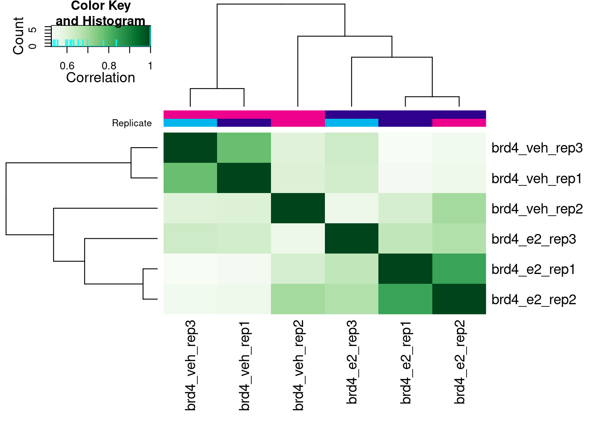
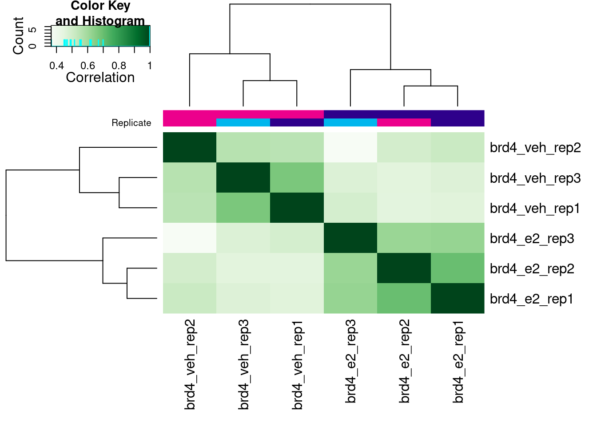
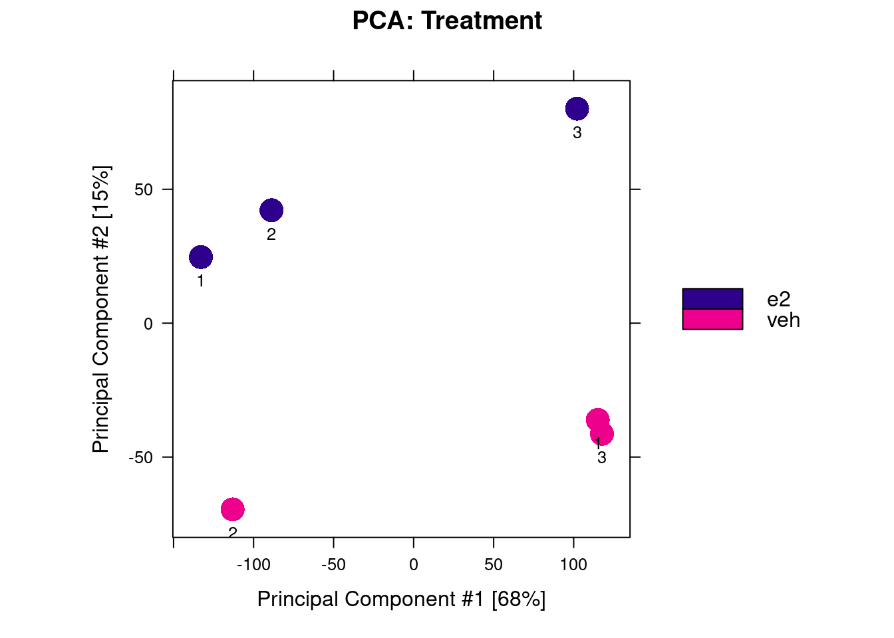
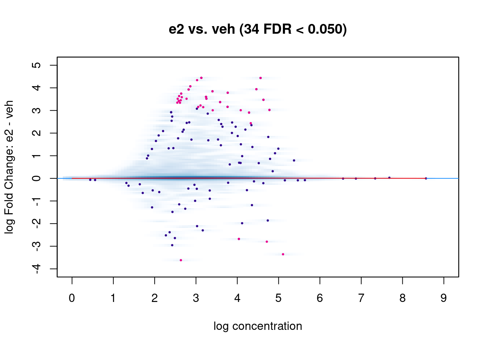
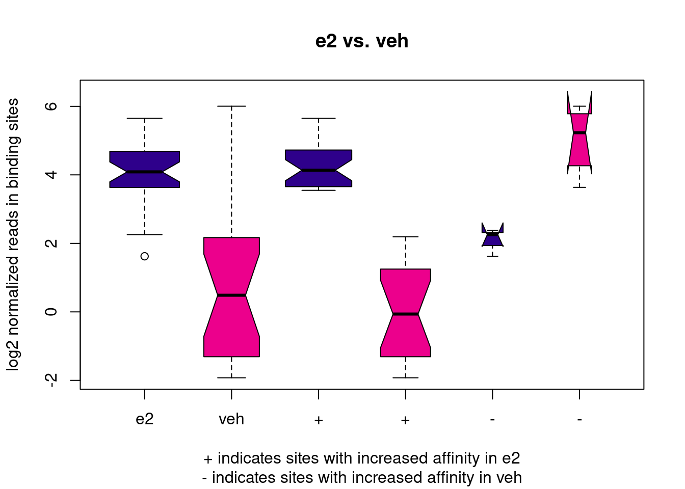
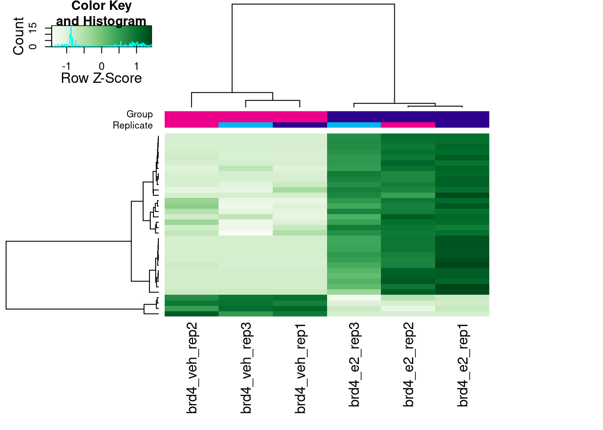

6 Differential binding
- Apply the
DiffBindpackage to identify differentially bound peaks between two conditions.
6.1 Differential binding
When multiple conditions are available in our ChIP design (e.g. healthy vs disease, wild-type vs mutant, treated vs control, different cell types, …), we may want to investigate whether certain peaks are differentially bound between them.
Finding differentially bound regions in the genome is analogous to identifying differentially expressed genes in RNA-seq data. In both cases we are dealing with count data summarised over features (genes/transcripts in the case of RNA-seq and peaks in the case of ChIP-seq). In both cases the biological replicates show larger variability than technical replicates, and the negative binomial model is suitable to compare binding affinities accross samples.
There are a number of differential expression packages in R that use the negative binomial model e.g. DESeq2 and edgeR. These methods are wrapped in the DiffBind package that is geared towards analysing differential binding in ChIP-seq data and provides a number of analytical plots as well.
As usual, we start by loading our packages:
# Packages ----
# load packages
library(rtracklayer) # for importing BED/GFF/etc.
library(plyranges) # for working with GenomicRanges
library(ChIPseeker) # to annotate peaks
library(profileplyr) # for profile heatmaps
library(DiffBind) # for ChIP peak analysis
library(ggplot2)
# change the default ggplot theme
theme_set(theme_classic(base_size = 14))6.2 Reading peaks
As is common with Bioconductor packages, the DiffBind package uses its own data structure, called a dba object. To create this, we need to create a CSV file with the following information:
- TODO long list of columns
We’ve already created this for you, so all we need to do is read it in:
SampleID Tissue Antibody Condition Treatment Replicate
1 brd4_e2_rep1 MCF7 breast cancer cells BRD4 NA e2 1
2 brd4_e2_rep2 MCF7 breast cancer cells BRD4 NA e2 2
3 brd4_e2_rep3 MCF7 breast cancer cells BRD4 NA e2 3
4 brd4_veh_rep1 MCF7 breast cancer cells BRD4 NA veh 1
5 brd4_veh_rep2 MCF7 breast cancer cells BRD4 NA veh 2
6 brd4_veh_rep3 MCF7 breast cancer cells BRD4 NA veh 3
bamReads
1 preprocessed/nf-chipseq/bwa/mergedLibrary/brd4_e2_rep1.mLb.clN.sorted.bam
2 preprocessed/nf-chipseq/bwa/mergedLibrary/brd4_e2_rep2.mLb.clN.sorted.bam
3 preprocessed/nf-chipseq/bwa/mergedLibrary/brd4_e2_rep3.mLb.clN.sorted.bam
4 preprocessed/nf-chipseq/bwa/mergedLibrary/brd4_veh_rep1.mLb.clN.sorted.bam
5 preprocessed/nf-chipseq/bwa/mergedLibrary/brd4_veh_rep2.mLb.clN.sorted.bam
6 preprocessed/nf-chipseq/bwa/mergedLibrary/brd4_veh_rep3.mLb.clN.sorted.bam
ControlID
1 mcf7_input_e2
2 mcf7_input_e2
3 mcf7_input_e2
4 mcf7_input_veh
5 mcf7_input_veh
6 mcf7_input_veh
bamControl
1 preprocessed/nf-chipseq/bwa/mergedLibrary/mcf7_input_e2.mLb.clN.sorted.bam
2 preprocessed/nf-chipseq/bwa/mergedLibrary/mcf7_input_e2.mLb.clN.sorted.bam
3 preprocessed/nf-chipseq/bwa/mergedLibrary/mcf7_input_e2.mLb.clN.sorted.bam
4 preprocessed/nf-chipseq/bwa/mergedLibrary/mcf7_input_veh.mLb.clN.sorted.bam
5 preprocessed/nf-chipseq/bwa/mergedLibrary/mcf7_input_veh.mLb.clN.sorted.bam
6 preprocessed/nf-chipseq/bwa/mergedLibrary/mcf7_input_veh.mLb.clN.sorted.bam
Peaks
1 preprocessed/nf-chipseq/bwa/mergedLibrary/macs2/broadPeak/brd4_e2_rep1_peaks.broadPeak
2 preprocessed/nf-chipseq/bwa/mergedLibrary/macs2/broadPeak/brd4_e2_rep2_peaks.broadPeak
3 preprocessed/nf-chipseq/bwa/mergedLibrary/macs2/broadPeak/brd4_e2_rep3_peaks.broadPeak
4 preprocessed/nf-chipseq/bwa/mergedLibrary/macs2/broadPeak/brd4_veh_rep1_peaks.broadPeak
5 preprocessed/nf-chipseq/bwa/mergedLibrary/macs2/broadPeak/brd4_veh_rep2_peaks.broadPeak
6 preprocessed/nf-chipseq/bwa/mergedLibrary/macs2/broadPeak/brd4_veh_rep3_peaks.broadPeak
PeakCaller
1 bed
2 bed
3 bed
4 bed
5 bed
6 bedOnce we have this samplesheet, creating the dba object is relatively simple (note in this case we’re only loading the BRD4 samples):
# create DBA object for BRD4 antibody
brd4_dba <- dba(sampleSheet = samplesheet[samplesheet$Antibody == "BRD4", ])
brd4_dba6 Samples, 12395 sites in matrix (48128 total):
ID Tissue Treatment Replicate Intervals
1 brd4_e2_rep1 MCF7 breast cancer cells e2 1 20240
2 brd4_e2_rep2 MCF7 breast cancer cells e2 2 11144
3 brd4_e2_rep3 MCF7 breast cancer cells e2 3 2599
4 brd4_veh_rep1 MCF7 breast cancer cells veh 1 2922
5 brd4_veh_rep2 MCF7 breast cancer cells veh 2 37306
6 brd4_veh_rep3 MCF7 breast cancer cells veh 3 2107Without doing any further analysis, we can already produce a correlation heatmap using the plot() function:
# correlation plot using caller score
plot(brd4_dba)
This correlation is calculated based on the score given to each peak, in our case the score that MACS assigns to each called peak. This is not necessarily the best way to look at the correlation between samples, as it doesn’t take into account the actual counts in each peak (that will come later), but it’s a good starting point to look at the correlation between our samples.
In our case, we can see that our replicates are not clustering per treatment, suggesting other effects may have played a role in the ChIP profiles.
The next step is to count reads in each peak (which is the raw data that will be used to estimate the differential binding). This step takes a long time, so be prepared to wait if you’re running this on your data.
# count reads overlapping peaks
# this takes a long time to run! So we load pre-computed one
# brd4_dba <- dba.count(brd4_dba)
brd4_dba <- readRDS("preprocessed/r_objects/brd4_dba.count.rds")
# correlation plot based on raw counts
plot(brd4_dba)
Now, when we call the plot() function the correlation heatmap is instead done from the counts assigned to each peak (rather than peak scores). In this case, we get a clearer clustering of samples by treatment, which is a good sign!
The next step in the analysis is to normalise the counts. There are different methods to normalise the counts, and this is discussed at length by the DiffBind authors (see section 7 in the documentation). In summary, these authors argue for caution when applying normalisation methods used for RNA-seq analysis, as those methods assume that most features (peaks in our case, genes in the RNA-seq case) are not differentially expressed/bound between conditions. However, this assumption may not make biological sense in the case of ChIP-seq, as some conditions may dramatically affect the binding profiles genome-wide.
This may certainly be the case for BRD4, as we’ve seen from our profile plots that binding is generally higher for E2-treated samples compared to controls. For this reason, the default normalisation method used by DiffBind is a simple library size normalisation, which we apply below.
# normalise counts by library size (default)
brd4_dba <- dba.normalize(brd4_dba, normalize = DBA_NORM_LIB)One final step before we fit the model that will test for differential binding, is to set the “contrast” of our experiment. This is where we can set which factors should be taken into account when modelling the counts and which comparisons we want to make. There is quite a lot of flexibility in setting these models, which is detailed in the package’s documentation as well as the documentation for DEseq2, which is used behind the scenes.
In our case, we only have one factor (treatment) with two conditions (“e2” and “veh”). Therefore, we can set our contrast like so:
# set contrast
brd4_dba <- dba.contrast(brd4_dba,
design = ~ Treatment,
reorderMeta = list(Treatment = "veh"),
minMembers = 3)Where:
-
designuses R’s standard model formula syntax to define the variables used to model our counts, in our case “Treatment” (this is one of the columns from our CSV samplesheet). -
reorderMetais used to set the reference level for our Treatment variable; in our case it makes sense to set “veh” as the reference level (control). The default reference level would be whichever comes first alphabetically. -
minMembersdefines the minimum number of replicates required to run the analysis. The default value is in fact 3, but we’ve set it anyway to be explicit.
Finally, we can fit the statical model using DEseq2’s statistical machinery (the other option is to use DBA_EDGER, which would use that package instead - the results are very comparable).
# run the analysis
brd4_dba <- dba.analyze(brd4_dba,
method = DBA_DESEQ2,
bBlacklist = FALSE,
bGreylist = FALSE)Note that we’ve set two options to FALSE:
-
bBlacklistturns off the behaviour of trying to identify our genome and apply an exclusion list to it. We’ve already done this when we did peak calling with thenf-core/chipseqworkflow, so there is no need to do this again. -
bGreylistturns off the behaviour of estimating a so-called “greylist”. We talk more about this below.
Finally, with the analysis done, it’s time to extract our results, which are returned as a familiar GRanges object:
# extract diffbound sites
# keep all peaks, even those that are non-significant
brd4_diffbound <- dba.report(brd4_dba, th = 1)
brd4_diffboundGRanges object with 12331 ranges and 6 metadata columns:
seqnames ranges strand | Conc Conc_e2 Conc_veh
<Rle> <IRanges> <Rle> | <numeric> <numeric> <numeric>
7853 21 42365357-42365757 * | 4.56334 5.53382 0.00000
7548 20 53865352-53865752 * | 5.10739 2.25210 6.00409
7493 20 53660691-53661091 * | 4.63297 5.54957 1.47889
3675 15 74816468-74816868 * | 4.46242 5.40868 0.68917
7263 20 44714529-44714929 * | 3.12993 4.12993 0.00000
... ... ... ... . ... ... ...
12064 KI270754.1 3352-3752 * | 1.47054 1.44409 1.49652
7710 20 63330620-63331020 * | 1.41217 1.40120 1.42307
1682 11 31509716-31510116 * | 1.53077 1.53102 1.53053
5879 19 16535344-16535744 * | 1.55841 1.55877 1.55805
12034 KI270467.1 3240-3640 * | 5.08000 4.95839 5.19215
Fold p-value FDR
<numeric> <numeric> <numeric>
7853 4.43696 8.71201e-07 0.00756452
7548 -3.35432 1.33026e-06 0.00756452
7493 3.47205 5.27113e-06 0.01612934
3675 3.94028 5.67285e-06 0.01612934
7263 4.44204 8.38315e-06 0.01906832
... ... ... ...
12064 -0.000219130 0.994758 1
7710 -0.000213502 0.994952 1
1682 0.000186362 0.995030 1
5879 0.000171415 0.995530 1
12034 -0.002416403 1.000000 1
-------
seqinfo: 44 sequences from an unspecified genome; no seqlengthsWe can use some plyranges syntax to obtain a summary of how many peaks are differentially bound and in which direction:
# count how many up or down
brd4_diffbound |>
filter(FDR < 0.05) |>
summarise(up = sum(Fold > 0), down = sum(Fold < 0))DataFrame with 1 row and 2 columns
up down
<integer> <integer>
1 30 4The result is not particularly striking. It suggests that not many peaks are differentially bound between conditions. Let’s investigate our results a bit further with some visualisations.
6.3 Differential binding visualisation
The DiffBind package provides several plotting functions, illustrated below.
We start with a PCA, which shows that samples separate by treatment along PC2, but not PC1 (the axis of greatest variance). This suggests that factors other than the treatment influenced our ChIP results. This may explain the relatively low number of differentially bound peaks.
# PCA plot
dba.plotPCA(brd4_dba, label = DBA_REPLICATE)
Another common visualisation used in differential analysis is the MA plot. This shows the average normalised read counts on the X-axis and the log-fold change on the Y-axis. This plot can be used to assess the effect of the normalisation on the data (red trend line, which we want to be close to the zero horizontal line) as well as highlighting the significant differentially bound regions (pink points).
# MA plot
dba.plotMA(brd4_dba)
You can also generate this plot with ggplot2, if you want to customise it further:
# can also do it with ggplot2
brd4_diffbound |>
as.data.frame() |>
mutate(sig = ifelse(FDR < 0.05, Fold, NA)) |>
ggplot(aes(Conc, Fold)) +
geom_point(colour = "grey") +
geom_point(aes(y = sig), colour = "black") +
geom_hline(yintercept = 0, linetype = "dashed")Another common visualisation is a volcano plot, which shows the log-fold change on the x-axis and p-values on the y-axis (we don’t show this one, to save space).
# volcano plot
dba.plotVolcano(brd4_dba)
# can also do it with ggplot2
brd4_diffbound |>
as.data.frame() |>
mutate(sig = ifelse(FDR < 0.05, Fold, NA)) |>
ggplot(aes(Fold, -log10(FDR))) +
geom_point(colour = "grey") +
geom_point(aes(x = sig), colour = "black") +
geom_vline(xintercept = 0, linetype = "dashed")We can also produce a boxplot of normalised counts, which shows the distribution of counts in the whole dataset, and on the subset of peaks with significant differential binding (both upwards and downwards).
# boxplot of normalised counts
dba.plotBox(brd4_dba)
In our case, this boxplot is interesting, as it illustrates that, overall, BRD4 in E2-treated cells seems to have higher binding affinity than in control cells. This might either be biologically reasonable, or it may be an issue with data quality (recall the variation in FRiP scores we’ve seen earlier and the fact that the PCA separates samples from different treatments along PC1). As we are not experts in this biological system, we refrain from making further comments on this.
Finally, we can visualise the scaled counts in the differentially bound peaks as a heatmap:
# heatmap of DB peaks
dba.plotHeatmap(brd4_dba, contrast = 1,
correlations = FALSE, scale = "row")
6.4 Pipeline
Although we’ve broken our analysis down into individual steps, it’s worth nothing that because each function of the DiffBind workflow always returns the dba object with further elements added to it, we can put it all together using |> pipes:
# full pipeline - do not run, it will take too long!
brd4_dba <- dba(sampleSheet = samplesheet[samplesheet$Antibody == "BRD4", ]) |>
dba.count() |>
dba.normalize(normalize = DBA_NORM_LIB) |>
dba.contrast(reorderMeta = list(Treatment = "veh")) |>
dba.analyze(method = DBA_DESEQ2,
bBlacklist = FALSE,
bGreylist = FALSE)
# extract diffbound sites
brd4_diffbound <- dba.report(brd4_dba, th = 1)As we did before, we can also annotate our differentially bound peaks using ChIPseeker:
# import gene annotation as a transcript database
genes <- GenomicFeatures::makeTxDbFromGFF("resources/GRCh38.109.gtf.gz")
# annotate
brd4_diffbound <- annotatePeak(brd4_diffbound,
tssRegion = c(-3e3, 3e3),
TxDb = genes) |>
as.GRanges()